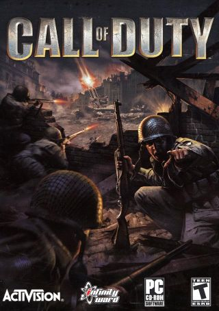
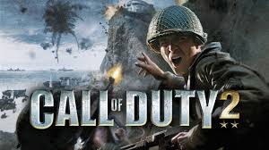

Es un videojuego de disparos en primera persona de tipo bélico desarrollado por Infinity Ward. El videojuego es el primer título de la franquicia en ser lanzado para las videoconsolas de séptima generación.El juego es el sucesor espiritual del videojuego Medal of Honor: Allied Assault que fue desarrollado por 2015 Inc. (cuyos antiguos empleados crearon el estudio de Infinity Ward),este simula la infantería combinada con la armas de la Segunda Guerra Mundial. El videojuego está basado en el motor id Tech 3.Fue lanzado para Microsoft Windows en Norteamérica el 29 de octubre de 2003 y en Europa el 7 de noviembre de 2003; para móviles, el 29 de enero de 2004 y para Xbox 360 y PlayStation 3 a través sus servicios en línea (Xbox Live, PlayStation Network y PlayStation Vita respectivamente) el 2 y 3 diciembre de 2009. Una expansión para PC fue lanzada, Call of Duty: United Offensive, la cual fue publicada por Activision, y desarrollada por Gray Matter Interactive, con contribuciones de Pi Studios. La campaña estadounidense empieza con el soldado raso Joey Martin, miembro del 506.º Regimiento de Infantería Paracaidista, entrenando en el Campamento Toccoa en Georgia, Estados Unidos el 9 de agosto de 1942. Esto hace que el jugador se familiarice con los controles del juego. La primera misión ocurre cerca de la medianoche, el 5 de junio de 1944, como parte de las operaciones aéreas que iniciaron la invasión de Normandía. Martin es enviado fuera de la ciudad de Sainte-Mère-Église como un explorador para formar una zona de descenso para otros paracaidistas. Los paracaidistas que caen terminan separados, dejando a Martin en una unidad mixta de varias compañías.
Es un videojuego de disparos en primera persona bélico, perteneciente a la popular serie de videojuegos Call of Duty de Activision y que sucede a la primera entrega. Fue desarrollado por Infinity Ward, con la colaboración de Pi Studios, y publicado al mercado el 4 de noviembre de 2005 para PC, un mes más tarde lo hizo para Xbox 360 simultáneamente con la salida de esta videoconsola. Los escenarios de Call of Duty 2 reproducen Rusia en la época invernal donde muchos alemanes murieron a causa del extremo frío (primera campaña); el desierto Libio donde se pelea en el ejército británico contra el Afrika Korps dirigido por el mariscal de campo Erwin Rommel (segunda campaña); y Normandía, precisamente en las playas de desembarco, con los estadounidenses y unas misiones en Caen también peleando por los británicos (tercera campaña aunque esta es más orientada a los estadounidenses).En la campaña rusa se combate contra los alemanes en las calles de Moscú y de Stalingrado, en la personalidad de un soldado ruso que ha perdido a casi toda su familia en la guerra. La acción promete mucho y es considerada por muchos como la mejor campaña del juego, (pues las demás se pueden tornar un tanto repetitivas), aunque presenta ciertas fallos como que todos los alemanes van vestidos con sus uniformes de invierno, cosa que no fue así, o que en misiones del año 1942 se pueden encontrar fusiles semiautomáticos Gewehr 43, que aún no entraban en servicio.